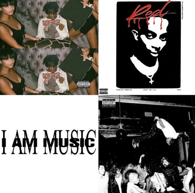

Jordan Terrell Carter, known professionally as Playboi Carti, is an American rapper, singer, and songwriter. He is a central figure in modern hip-hop, famous for his experimental vocal styles, gothic fashion, and pioneering the rage rap subgenre.Early Life and Roots (1996–2014)Birth: Born on September 13, 1996, in Atlanta, Georgia.Upbringing: Grew up in Riverdale, Georgia, attending North Springs Charter High School.Early alias: Started rapping under the name Sir Cartier in 2011.First collective: Joined the Atlanta underground group Awful Records in 2014.Rise to Fame and A$AP Mob (2015–2017)The mentor: Met A$AP Rocky in 2015, who mentored him and helped him sign to AWGE and Interscope Records.Breakout singles: Gained mainstream attention with viral hits "Broke Boi" and "Fetti" in 2015.Debut mixtape: Released his self-titled debut mixtape, Playboi Carti, in April 2017.Global hits: The mixtape featured Billboard Hot 100 charting singles "Magnolia" and "wokeuplikethis"*.Album Era and Sound Evolution (2018–Present)Die Lit (2018): Released his debut studio album, cementing his partnership with producer Pi'erre Bourne.Baby voice: Developed a signature high-pitched "baby voice" technique that defined late-2010s internet rap.Whole Lotta Red (2020): Debuted at No. 1 on the Billboard 200, introducing a chaotic punk-rock aesthetic and heavily influencing the underground "rage" sound.MUSIC (2025): Released his highly anticipated third album, which topped the charts and pushed his experimental boundaries even further.Opium Records: Founded his own record label, signing prominent underground artists like Ken Carson, Destroy Lonely, and Homixide Gang.
Best Album
Best Album
- Die Lit ( 2018 )
- Whole Lotta Red ( 2020 )
- I AM MUSIC ( 2025 )
| 8:30-9:30 | 9:30-10:30 | 10:30-11:30 | 11:30-12:30 | 12:30-2:00 | 2:00-3:00 | 3:00-4:00 | 4:00-5:00 | |
|---|---|---|---|---|---|---|---|---|
| MONDAY | --- | SUB1 | SUB2 | SUB3 | L A N C H |
SUB4 | SUB5 | COUNSELLING CLASS |
| TUESDAY | SUB1 | SUB2 | SUB3 | --- | SAB2 | SAB2 | LIBRARY | |
| WEDNESDAY | SUB1 | SUB2 | SWA | --- | LAB | |||
| THURSDAY | SUB1 | SUB2 | SUB3 | --- | SUB2 | SUB2 | LIBRARY | |
| FRIDAY | SUB1 | SUB2 | SUB3 | --- | SUB2 | SUB2 | LIBRARY | |
| SATURDAY | SUB1 | SEMINAR | SUB4 | SUB5 | LIBRARY | |||
Listening to a track
Listening to a track
- «Magnolia» — 1 102 097 000+ Streams.
- «Sky» - 1 047 345 000+ Streams.
- «R.I.P.» — 442 590 000+ Streams.
- «On That Time» — 172 079 000+ Streams.
- «EVIL J0RDAN» — 114 869 000+ Streams.

I’d rather have a unique style than follow what’s hot.